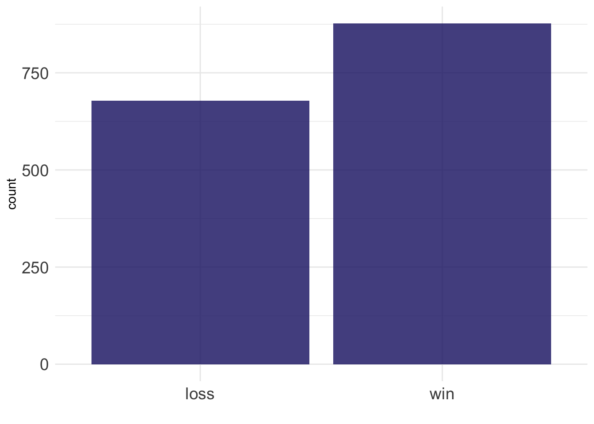
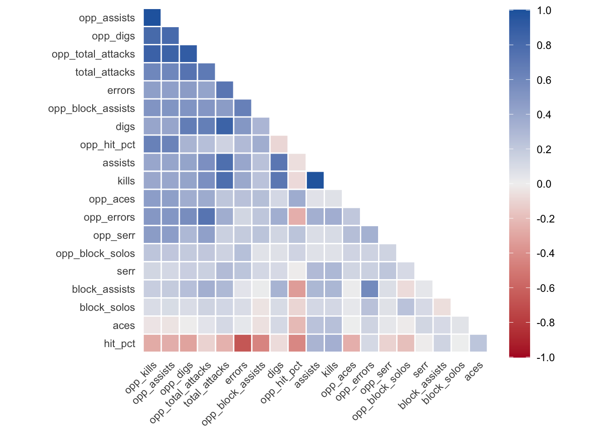
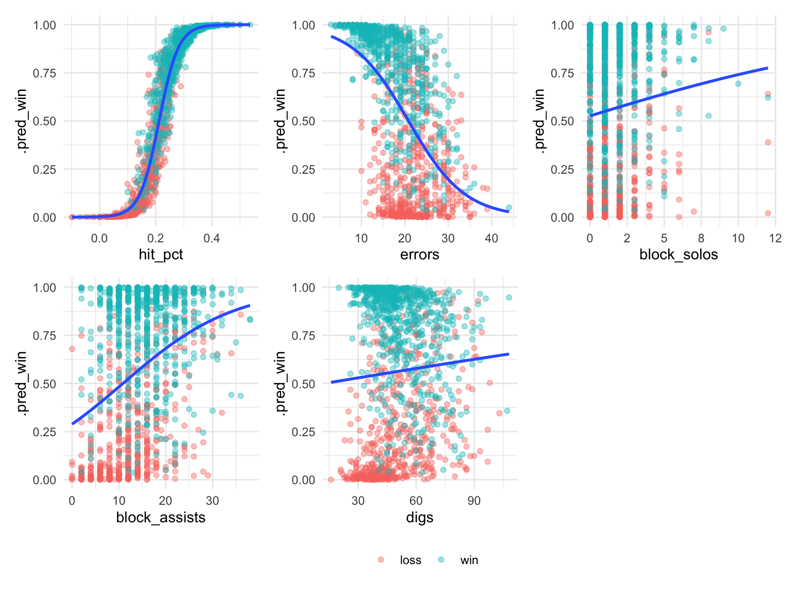
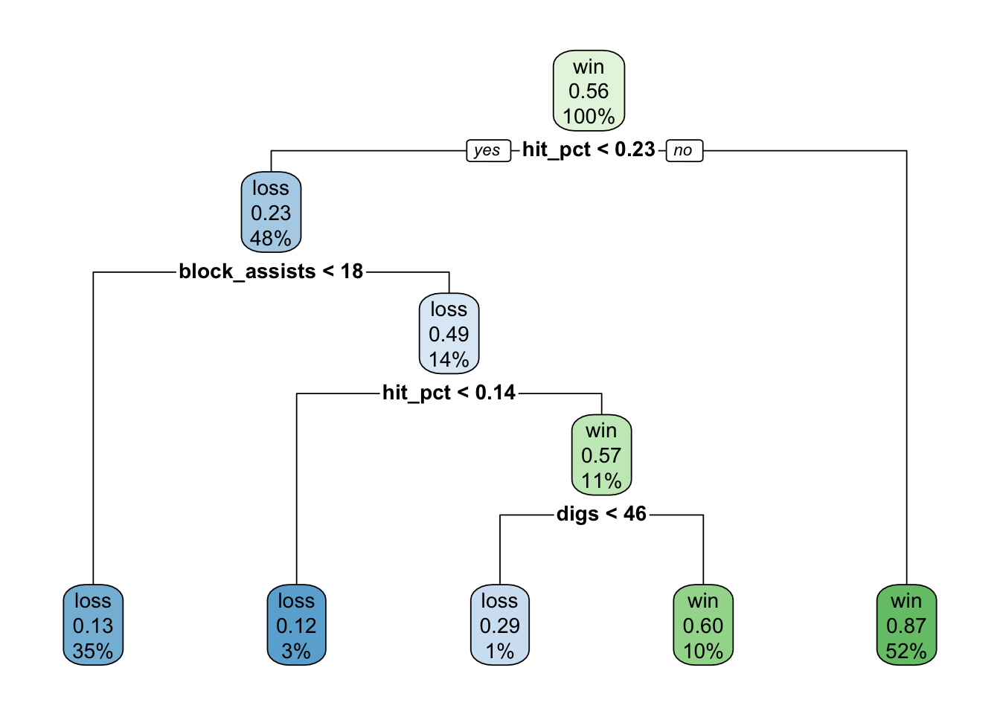
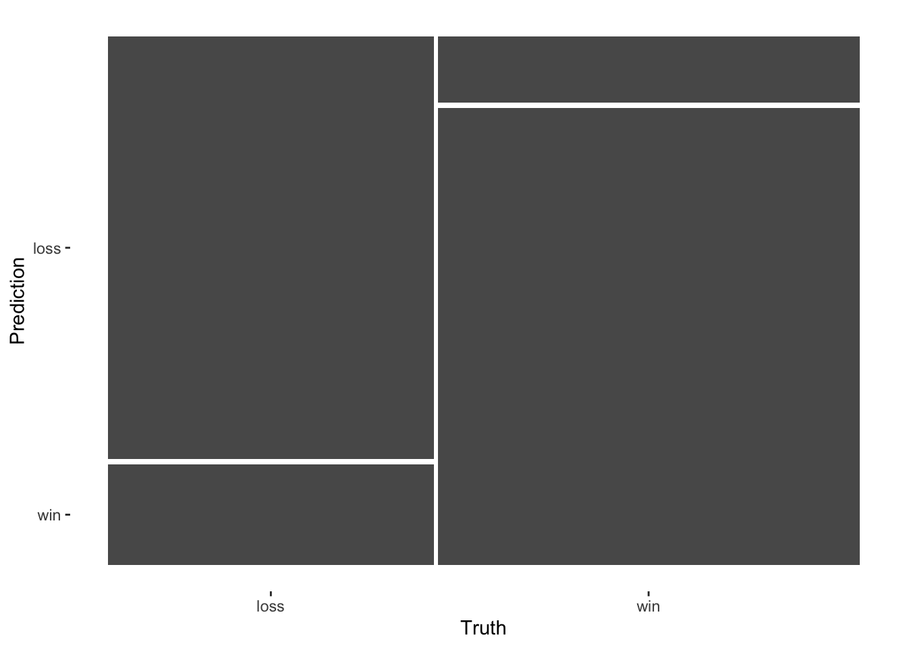
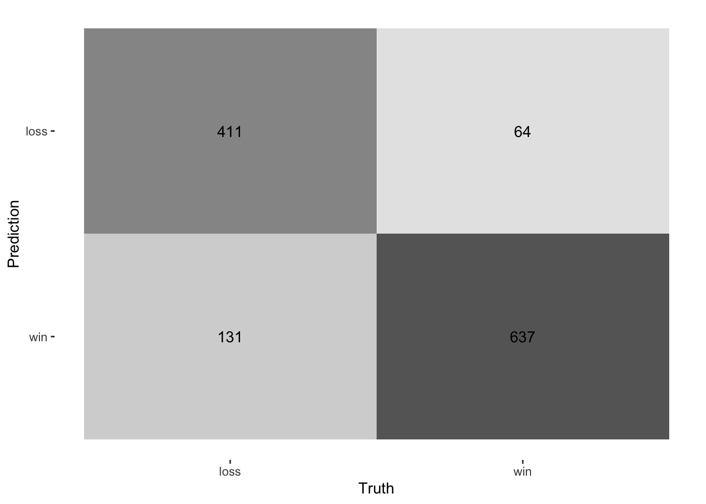
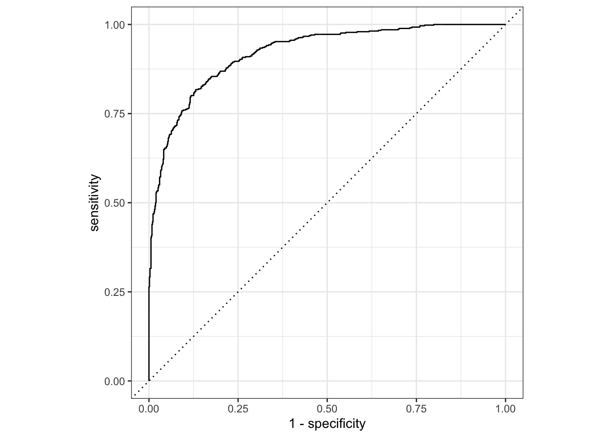
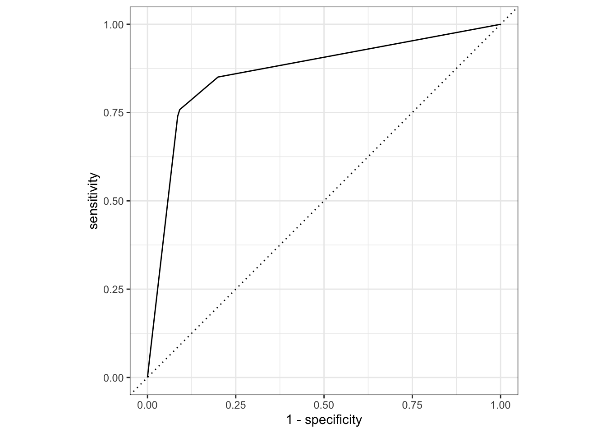

library(tidyverse)
library(tidymodels)
library(corrr)
library(skimr)
library(here)
library(glue)
library(rpart.plot)
library(patchwork)
tidymodels_prefer()Messing around with tidymodels: Learning how to fit a binary classification model using NCAA Big Ten women’s volleyball data
tutorial
tidymodels
classification
decision tree
logistic regression
Using tidymodels to predict wins and losses for volleyball matches
The initial rounds of the NCAA women’s volleyball tournament have just begun. As such, I felt it was a good opportunity to understand more about the game while learning to specify models using Big Ten women’s volleyball match data and the tidymodels framework. This post sought to specify a predictive model of wins and loses. It then used this model to explore and predict match outcomes of the #1 team going into the tournament, the Nebraska Cornhuskers.
This post overviews the use of the tidymodels framework to fit and train predictive models. Specifically, it aims to be an introductory tutorial on the use of tidymodels to split data into test and training sets, specify a model, and assess model fit using both the training and testing data. To do this, I explored the fit of two binary classification models to NCAA Big Ten women’s volleyball match data, with the goal to predict wins and loses.
Being a high-level overview, this post will not cover topics like feature engineering, resampling techniques, hyperparameter tuning, or ensemble methods. Most assuredly, additional modeling procedures would lead to improved model predictions. As such, I plan to write future posts overviewing these topics.
Let’s attach the libraries we’ll need for the session.
Establish a modeling goal
First things first, we need to establish a modeling goal. Given the scope of this post, I have the following goal:
Create a simple binary classification model to predict wins and loses using NCAA Big Ten women’s volleyball match data.
Note
There might be a slight issue of data leakage in this example. In a previous post, I explored correlations using similar data. Since this post aims to be a tutorial, I’m simply making note of it here, and I will not address further. Indeed, it is considered best practice to perform exploratory analysis only on the test set rather than all the data when fitting predictive models.
We’ll start by importing our data using readr::read_csv().
data_vball <-
read_csv(
glue(
here("blog/posts/2023-12-07-tidymodels-bigten-volleyball/"),
"2023-12-04_bigten_vb_data.csv"
)
) |>
select(-ms)Rows: 1613 Columns: 28
── Column specification ────────────────────────────────────────────────────────────────────────────
Delimiter: ","
chr (3): team_name, opponent, w_l
dbl (24): set_wins, set_loss, s, kills, errors, total_attacks, hit_pct, assists, aces, serr, di...
date (1): date
ℹ Use `spec()` to retrieve the full column specification for this data.
ℹ Specify the column types or set `show_col_types = FALSE` to quiet this message.Data background
The data represents up to date match-by-match offensive and defensive statistics for NCAA Big Ten women’s volleyball teams. The data includes matches from the 2021, 2022, and 2023 seasons, where the earliest recorded match is 2021-01-22. The data is updated up to 2023-11-25. To see the variables within the data, we can run the dplyr::glimpse() function.
glimpse(data_vball)Rows: 1,613
Columns: 27
$ date <date> 2021-01-22, 2021-01-23, 2021-01-29, 2021-01-30, 2021-02-05, 2021-02-06,…
$ team_name <chr> "Illinois Fighting Illini", "Illinois Fighting Illini", "Illinois Fighti…
$ opponent <chr> "@ Iowa", "@ Iowa", "Wisconsin", "Wisconsin", "@ Penn St.", "@ Penn St."…
$ w_l <chr> "win", "win", "loss", "loss", "loss", "loss", NA, NA, "loss", "loss", NA…
$ set_wins <dbl> 3, 3, 0, 1, 1, 2, 0, 0, 1, 2, 0, 0, 0, 0, 2, 0, 3, 3, 3, 3, 0, 3, 3, 3, …
$ set_loss <dbl> 1, 1, 3, 3, 3, 3, 0, 0, 3, 3, 0, 0, 3, 3, 3, 3, 1, 2, 0, 1, 3, 2, 2, 0, …
$ s <dbl> 4, 4, 3, 4, 4, 5, 0, 0, 4, 5, 0, 0, 3, 3, 5, 3, 4, 5, 3, 4, 3, 5, 5, 3, …
$ kills <dbl> 55, 49, 36, 48, 49, 55, 0, 0, 47, 59, 0, 0, 36, 41, 71, 32, 51, 63, 41, …
$ errors <dbl> 28, 21, 19, 22, 19, 31, 0, 0, 29, 29, 0, 0, 19, 25, 33, 29, 34, 30, 14, …
$ total_attacks <dbl> 139, 122, 101, 129, 112, 167, 0, 0, 137, 178, 0, 0, 111, 118, 185, 124, …
$ hit_pct <dbl> 0.194, 0.230, 0.168, 0.202, 0.268, 0.144, 0.000, 0.000, 0.131, 0.169, 0.…
$ assists <dbl> 48, 44, 27, 45, 47, 54, 0, 0, 43, 53, 0, 0, 31, 36, 64, 31, 44, 53, 35, …
$ aces <dbl> 14, 10, 3, 7, 5, 9, 0, 0, 6, 11, 0, 0, 5, 6, 5, 7, 12, 5, 7, 8, 2, 2, 12…
$ serr <dbl> 10, 11, 9, 10, 11, 14, 0, 0, 10, 6, 0, 0, 10, 11, 6, 10, 12, 14, 8, 10, …
$ digs <dbl> 61, 46, 34, 47, 48, 57, 0, 0, 53, 76, 0, 0, 35, 39, 90, 45, 67, 60, 33, …
$ block_solos <dbl> 1, 2, 1, 1, 0, 3, 0, 0, 2, 0, 0, 0, 1, 0, 1, 2, 2, 1, 1, 2, 0, 0, 3, 3, …
$ block_assists <dbl> 25, 22, 4, 12, 14, 16, 0, 0, 12, 16, 0, 0, 12, 8, 22, 6, 10, 14, 12, 27,…
$ opp_kills <dbl> 36, 37, 48, 55, 52, 63, 56, 63, 44, 39, 57, 33, 32, 52, 31, 44, 43, 63, …
$ opp_errors <dbl> 25, 24, 9, 14, 14, 21, 15, 18, 15, 14, 18, 12, 24, 21, 20, 29, 14, 25, 0…
$ opp_total_attacks <dbl> 131, 117, 105, 123, 124, 148, 141, 168, 103, 102, 179, 97, 135, 139, 93,…
$ opp_hit_pct <dbl> 0.084, 0.111, 0.371, 0.333, 0.306, 0.284, 0.291, 0.268, 0.282, 0.245, 0.…
$ opp_assists <dbl> 30, 36, 42, 46, 48, 56, 48, 52, 38, 35, 52, 30, 30, 51, 29, 34, 38, 57, …
$ opp_aces <dbl> 6, 1, 4, 5, 5, 9, 2, 2, 2, 4, 4, 2, 4, 8, 1, 1, 6, 6, 0, 0, 0, 0, 3, 2, …
$ opp_serr <dbl> 2, 8, 9, 11, 15, 10, 12, 10, 3, 8, 6, 5, 9, 11, 3, 8, 6, 7, 0, 0, 0, 0, …
$ opp_digs <dbl> 45, 43, 39, 47, 42, 67, 49, 77, 47, 39, 72, 49, 55, 64, 30, 48, 56, 80, …
$ opp_block_solos <dbl> 2, 1, 2, 1, 2, 3, 4, 1, 2, 1, 2, 1, 0, 1, 1, 2, 0, 0, 0, 0, 0, 0, 4, 3, …
$ opp_block_assists <dbl> 18, 20, 12, 14, 12, 20, 14, 24, 12, 12, 24, 28, 29, 16, 4, 14, 24, 28, 0…Most of the variable names should be informative, aside from s. This variable represents the total number of sets played within a match. If you’re unfamiliar with the sport, you might find the following list helpful.
Wrangle our data
Before fitting any models, a few data wrangling steps will need to take place. First, NA values need to be removed. NAs are present for two reasons:
- Cancelled matches due to the COVID pandemic in 2021.
- The pre-wrangled data contains matches that have not taken place in the 2023 season.
Second, the w_l column (i.e., wins and losses) needs to be mutated into a factor with two levels (win and loss). It’s generally best practice to mutate categorical variables into factors when using the tidymodels framework.
data_vball <- data_vball |>
drop_na(w_l) |>
mutate(w_l = factor(w_l, levels = c("loss", "win")))Check for any class imbalances
Let’s check for the presence of any class imbalances. Take note, this is the only exploratory analysis we’ll do before splitting our data into a training and testing set. Additional exploratory analysis will be done on the training set. This is done to prevent data leakage between the different modeling steps.
ggplot(data_vball, aes(x = w_l)) +
geom_bar(fill = "#191970", alpha = 0.8) +
theme_minimal() +
labs(x = "") +
theme(axis.text = element_text(size = 14))
The bar chart indicates the presence of a slight imbalance between wins and losses (win = 877; loss = 678). During the initial split of our data, we’ll employ a stratified sampling technique to account for this imbalance. This is done to ensure our splits avoid major class imbalances within the training and testing sets.
Determine the data budget
At this point, we need to split our data into testing and training data sets. rsample’s, a tidymodels’ package, initial_split() function makes this easy. While using this function, we’ll pass along our data object, data_vball, and values to two arguments: prop and strata.
The prop argument specifies the proportion of data to be retained in the training and testing data sets. It defaults to 3/4 or 75%. For our specific modeling case, we’ll specify we want to devote 80% of our data to the training set, with the remaining 20% going to the testing set. Given the data contains 1,555 rows, 1,243 rows will be allocated to the training set while the remaining 312 rows will be held out for the test set. Since class imbalances were identified, a stratified sampling technique will be used. To do this, we pass the name of the class variable to the strata argument. For reproducibility, set.seed(2023) is set before the split is specified.
set.seed(2023)
data_vball_split <- initial_split(data_vball, prop = .80, strata = w_l)Let’s take a quick look the data_vball_split object.
data_vball_split<Training/Testing/Total>
<1243/312/1555>You’ll notice this doesn’t print out any data. Rather, information about the split is printed to the console. initial_split() only creates an object with the information on how the split is to be performed. To perform the split, we need to use rsample’s training() and testing() functions. Simply, we do the following:
data_vball_train <- training(data_vball_split)
data_vball_test <- testing(data_vball_split)When these two objects are printed, you’ll see two tibbles. The first tibble is the training data set. The second tibble is the testing data set.
data_vball_train# A tibble: 1,243 × 27
date team_name opponent w_l set_wins set_loss s kills errors total_attacks hit_pct
<date> <chr> <chr> <fct> <dbl> <dbl> <dbl> <dbl> <dbl> <dbl> <dbl>
1 2021-01-29 Illinois Fi… Wiscons… loss 0 3 3 36 19 101 0.168
2 2021-01-30 Illinois Fi… Wiscons… loss 1 3 4 48 22 129 0.202
3 2021-02-06 Illinois Fi… @ Penn … loss 2 3 5 55 31 167 0.144
4 2021-02-19 Illinois Fi… Ohio St. loss 1 3 4 47 29 137 0.131
5 2021-02-20 Illinois Fi… Ohio St. loss 2 3 5 59 29 178 0.169
6 2021-03-05 Illinois Fi… Nebraska loss 0 3 3 36 19 111 0.153
7 2021-03-06 Illinois Fi… Nebraska loss 0 3 3 41 25 118 0.136
8 2021-03-12 Illinois Fi… @ Minne… loss 2 3 5 71 33 185 0.205
9 2021-03-13 Illinois Fi… @ Minne… loss 0 3 3 32 29 124 0.024
10 2021-04-02 Illinois Fi… @ Purdue loss 0 3 3 33 22 127 0.087
# ℹ 1,233 more rows
# ℹ 16 more variables: assists <dbl>, aces <dbl>, serr <dbl>, digs <dbl>, block_solos <dbl>,
# block_assists <dbl>, opp_kills <dbl>, opp_errors <dbl>, opp_total_attacks <dbl>,
# opp_hit_pct <dbl>, opp_assists <dbl>, opp_aces <dbl>, opp_serr <dbl>, opp_digs <dbl>,
# opp_block_solos <dbl>, opp_block_assists <dbl>data_vball_test# A tibble: 312 × 27
date team_name opponent w_l set_wins set_loss s kills errors total_attacks hit_pct
<date> <chr> <chr> <fct> <dbl> <dbl> <dbl> <dbl> <dbl> <dbl> <dbl>
1 2021-01-23 Illinois Fi… @ Iowa win 3 1 4 49 21 122 0.23
2 2021-02-05 Illinois Fi… @ Penn … loss 1 3 4 49 19 112 0.268
3 2021-03-19 Illinois Fi… Maryland win 3 1 4 51 34 162 0.105
4 2021-08-27 Illinois Fi… UC Sant… win 3 2 5 63 33 178 0.169
5 2021-09-10 Illinois Fi… SMU @ O… win 3 0 3 41 11 98 0.306
6 2021-09-17 Illinois Fi… @ Illin… win 3 0 3 43 10 88 0.375
7 2021-09-18 Illinois Fi… North T… win 3 0 3 40 17 102 0.225
8 2021-09-25 Illinois Fi… Northwe… win 3 2 5 65 19 137 0.336
9 2021-10-03 Illinois Fi… Wiscons… loss 1 3 4 48 20 142 0.197
10 2021-10-23 Illinois Fi… Michigan win 3 1 4 55 21 155 0.219
# ℹ 302 more rows
# ℹ 16 more variables: assists <dbl>, aces <dbl>, serr <dbl>, digs <dbl>, block_solos <dbl>,
# block_assists <dbl>, opp_kills <dbl>, opp_errors <dbl>, opp_total_attacks <dbl>,
# opp_hit_pct <dbl>, opp_assists <dbl>, opp_aces <dbl>, opp_serr <dbl>, opp_digs <dbl>,
# opp_block_solos <dbl>, opp_block_assists <dbl>Each of these data sets will be used at specific points during the modeling procedure. The training will be used for model specification and assessment. The testing will be used to assess the final model fit. But first, let’s do some exploratory data analysis on our training data.
Perform exploratory data analysis
Feature exploration
Given the number of features in the data, we can easily obtain summary information using skimr::skim().
skim(data_vball_train)| Name | data_vball_train |
| Number of rows | 1243 |
| Number of columns | 27 |
| _______________________ | |
| Column type frequency: | |
| character | 2 |
| Date | 1 |
| factor | 1 |
| numeric | 23 |
| ________________________ | |
| Group variables | None |
Variable type: character
| skim_variable | n_missing | complete_rate | min | max | empty | n_unique | whitespace |
|---|---|---|---|---|---|---|---|
| team_name | 0 | 1 | 13 | 25 | 0 | 14 | 0 |
| opponent | 0 | 1 | 3 | 40 | 0 | 329 | 0 |
Variable type: Date
| skim_variable | n_missing | complete_rate | min | max | median | n_unique |
|---|---|---|---|---|---|---|
| date | 0 | 1 | 2021-01-22 | 2023-11-25 | 2022-09-09 | 228 |
Variable type: factor
| skim_variable | n_missing | complete_rate | ordered | n_unique | top_counts |
|---|---|---|---|---|---|
| w_l | 0 | 1 | FALSE | 2 | win: 701, los: 542 |
Variable type: numeric
| skim_variable | n_missing | complete_rate | mean | sd | p0 | p25 | p50 | p75 | p100 | hist |
|---|---|---|---|---|---|---|---|---|---|---|
| set_wins | 0 | 1 | 2.03 | 1.22 | 0.00 | 1.00 | 3.00 | 3.00 | 3.00 | ▃▂▁▂▇ |
| set_loss | 0 | 1 | 1.65 | 1.31 | 0.00 | 0.00 | 2.00 | 3.00 | 3.00 | ▆▃▁▂▇ |
| s | 0 | 1 | 3.68 | 0.76 | 3.00 | 3.00 | 4.00 | 4.00 | 5.00 | ▇▁▅▁▃ |
| kills | 0 | 1 | 47.02 | 11.49 | 15.00 | 39.00 | 46.00 | 55.00 | 84.00 | ▁▆▇▅▁ |
| errors | 0 | 1 | 18.86 | 6.57 | 3.00 | 14.00 | 19.00 | 23.00 | 44.00 | ▃▇▇▂▁ |
| total_attacks | 0 | 1 | 125.31 | 30.19 | 63.00 | 101.00 | 121.00 | 148.00 | 237.00 | ▃▇▆▂▁ |
| hit_pct | 0 | 1 | 0.23 | 0.09 | -0.10 | 0.17 | 0.23 | 0.30 | 0.54 | ▁▃▇▅▁ |
| assists | 0 | 1 | 43.23 | 10.84 | 15.00 | 36.00 | 43.00 | 50.50 | 75.00 | ▂▆▇▃▁ |
| aces | 0 | 1 | 5.18 | 2.86 | 0.00 | 3.00 | 5.00 | 7.00 | 18.00 | ▅▇▃▁▁ |
| serr | 0 | 1 | 7.97 | 3.41 | 1.00 | 5.00 | 8.00 | 10.00 | 23.00 | ▅▇▅▁▁ |
| digs | 0 | 1 | 51.55 | 15.14 | 16.00 | 40.00 | 49.00 | 61.00 | 108.00 | ▂▇▅▂▁ |
| block_solos | 0 | 1 | 1.64 | 1.62 | 0.00 | 1.00 | 1.00 | 2.00 | 12.00 | ▇▂▁▁▁ |
| block_assists | 0 | 1 | 14.25 | 6.78 | 0.00 | 10.00 | 14.00 | 18.00 | 38.00 | ▂▇▆▂▁ |
| opp_kills | 0 | 1 | 43.64 | 15.01 | 0.00 | 34.00 | 44.00 | 54.00 | 84.00 | ▁▃▇▆▁ |
| opp_errors | 0 | 1 | 19.34 | 7.05 | 0.00 | 15.00 | 20.00 | 24.00 | 46.00 | ▁▆▇▂▁ |
| opp_total_attacks | 0 | 1 | 121.76 | 36.90 | 0.00 | 100.00 | 119.00 | 148.00 | 237.00 | ▁▂▇▅▁ |
| opp_hit_pct | 0 | 1 | 0.19 | 0.10 | -0.14 | 0.13 | 0.20 | 0.25 | 0.50 | ▁▃▇▅▁ |
| opp_assists | 0 | 1 | 40.20 | 13.99 | 0.00 | 31.00 | 41.00 | 50.00 | 75.00 | ▁▃▇▆▁ |
| opp_aces | 0 | 1 | 4.56 | 2.91 | 0.00 | 2.00 | 4.00 | 6.00 | 14.00 | ▆▇▆▂▁ |
| opp_serr | 0 | 1 | 7.58 | 3.66 | 0.00 | 5.00 | 7.00 | 10.00 | 23.00 | ▃▇▃▁▁ |
| opp_digs | 0 | 1 | 48.99 | 17.90 | 0.00 | 38.00 | 48.00 | 60.00 | 108.00 | ▁▆▇▃▁ |
| opp_block_solos | 0 | 1 | 1.43 | 1.44 | 0.00 | 0.00 | 1.00 | 2.00 | 12.00 | ▇▂▁▁▁ |
| opp_block_assists | 0 | 1 | 12.71 | 7.30 | 0.00 | 8.00 | 12.00 | 18.00 | 40.00 | ▆▇▃▁▁ |
A few things to note from the initial exploratory data analysis:
- Team errors, attacks, and digs distribution exhibits a slight right skew.
- Aces, service errors, block solos, opponent aces, opponent errors, opponent block solos, and opponent block assists exhibit a greater degree of skewness to the right.
An argument could be made for further exploratory analysis of these variables, followed by some feature engineering. Although this additional work may improve our final predictive model, this post is a general overview of specifying, fitting, and assessing models using the tidymodels framework. I will thus not address these topics further. However, I intend to write a future post focusing on feature engineering using tidymodels’ recipes package.
Examine correlations among features
The next step in the exploratory analysis is to identify the presence of any correlations among features. This can easily be done using functions from the corrr package. Specifically, the correlate() function calculates correlations among the various numeric features within our data. The output from the correlate() function is then passed to the autoplot() method, which outputs a visualization of the correlations values.
data_vball_train |>
correlate() |>
corrr::focus(-set_wins, -set_loss, -s, mirror = TRUE) |>
autoplot(triangular = "lower")Non-numeric variables removed from input: `date`, `team_name`, `opponent`, and `w_l`
Correlation computed with
• Method: 'pearson'
• Missing treated using: 'pairwise.complete.obs'
The plot indicates correlations of varying degrees among features. Feature engineering and feature reduction approaches could be used to address these correlations. However, these approaches will not be explored in this post.
Specify our models
To keep things simple, I’ll explore the fit of two models to the training data. However, tidymodels has interfaces to fit a wide-range of models, many of which are implemented via the parsnip package.
The models I intend to fit to our data include:
- A logistic regression using
glm. - A decision tree using
rpart.
When specifying a model with tidymodels, we do three things:
Use
parsnipfunctions to specify the mathematical structure of the model we intend to use (e.g.,logistic_reg();decision_tree()).Specify the engine we want to use to fit our model. This is done using the
set_engine()function.When required, we declare the mode of the model (i.e., is it regression or classification). Some models can perform both, so we need to explicitly set the mode with the
set_mode()function.
Specifying the two models in this post looks like this:
# Logistic regression specification
log_reg_spec <-
logistic_reg() |>
set_engine("glm")
# Decision tree specification
dt_spec <-
decision_tree() |>
set_engine("rpart") |>
set_mode("classification")Let’s take a moment to breakdown what’s going on here. The calls to logistic_regression() and decision_tree() establishes the mathematical structure we want to use to fit our model to the data. set_engine("glm") and set_engine("rpart") specifies the model’s engine, i.e., the software we want to use to fit our model. For our decision tree, since it can perform both regression and classification, we specify it’s mode using set_mode("classification"). You’ll notice our logistic regression specification excludes this function. This is because logistic regression is only used to perform classification, thus we don’t need to set its mode.
If you’re curious or want more information on what parsnip is doing in the background, you can pipe the model specification object to the translate() function. Here’s what the output looks like for our decision tree specification:
dt_spec |> translate()Decision Tree Model Specification (classification)
Computational engine: rpart
Model fit template:
rpart::rpart(formula = missing_arg(), data = missing_arg(), weights = missing_arg())If you’re interested in viewing the types of engines available for your model, you can use parsnip’s show_engines() function. Here you’ll need to pass a string character of the model function you want to explore as an argument. This is what this looks like for logistic_reg():
show_engines("logistic_reg")# A tibble: 7 × 2
engine mode
<chr> <chr>
1 glm classification
2 glmnet classification
3 LiblineaR classification
4 spark classification
5 keras classification
6 stan classification
7 brulee classificationCreate workflows
From here, we’ll create workflow objects using tidymodel’s workflow package. Workflow objects make it easier to work with different modeling objects by combining objects into one object. Although this isn’t too important for our current modeling task, the use of workflows will be beneficial later when we attempt to improve upon our models, like I’ll do in future posts.
In this case, our model specification and model formula are combined into a workflow object. Here I just choose a few features to include within the model. For this post, I mainly focused on using team oriented features within our model to predict wins and losses. Indeed, others could have been included, as the data also contained opponent oriented statistics. To keep things simple, however, I chose to only include the following features within our model:
- Hitting percentage
- Errors
- Block solos
- Block assists
- Digs
The workflow() function sets up the beginning of our workflow object. We’ll add the model object with add_model(), followed by the formula object using add_formula().
log_reg_wflow <-
workflow() |>
add_model(log_reg_spec) |>
add_formula(
w_l ~ hit_pct + errors + block_solos + block_assists + digs
)
dt_wflow <-
workflow() |>
add_model(dt_spec) |>
add_formula(
w_l ~ hit_pct + errors + block_solos + block_assists + digs
)This syntax can be a bit long, so there’s a shortcut. We can pass both the model formula and the model specification as arguments to the workflow() function instead of using a piped chain of functions.
log_reg_wflow <-
workflow(
w_l ~ hit_pct + errors + block_solos + block_assists + digs,
log_reg_spec
)
dt_wflow <-
workflow(
w_l ~ hit_pct + errors + block_solos + block_assists + digs,
dt_spec
)Fit our models
Now with our models specified, we can go about fitting our model to the training data using the fit() method. We do the following to fit both models to the training data:
log_reg_fit <- log_reg_wflow |> fit(data = data_vball_train)
dt_fit <- dt_wflow |> fit(data = data_vball_train)Let’s take a look at the log_reg_fit and dt_fit fit objects.
log_reg_fit══ Workflow [trained] ══════════════════════════════════════════════════════════════════════════════
Preprocessor: Formula
Model: logistic_reg()
── Preprocessor ────────────────────────────────────────────────────────────────────────────────────
w_l ~ hit_pct + errors + block_solos + block_assists + digs
── Model ───────────────────────────────────────────────────────────────────────────────────────────
Call: stats::glm(formula = ..y ~ ., family = stats::binomial, data = data)
Coefficients:
(Intercept) hit_pct errors block_solos block_assists digs
-8.54857 30.05361 -0.01277 0.20006 0.08764 0.01375
Degrees of Freedom: 1242 Total (i.e. Null); 1237 Residual
Null Deviance: 1703
Residual Deviance: 874.4 AIC: 886.4dt_fit══ Workflow [trained] ══════════════════════════════════════════════════════════════════════════════
Preprocessor: Formula
Model: decision_tree()
── Preprocessor ────────────────────────────────────────────────────────────────────────────────────
w_l ~ hit_pct + errors + block_solos + block_assists + digs
── Model ───────────────────────────────────────────────────────────────────────────────────────────
n= 1243
node), split, n, loss, yval, (yprob)
* denotes terminal node
1) root 1243 542 win (0.4360418 0.5639582)
2) hit_pct< 0.2255 601 140 loss (0.7670549 0.2329451)
4) block_assists< 17.5 429 56 loss (0.8694639 0.1305361) *
5) block_assists>=17.5 172 84 loss (0.5116279 0.4883721)
10) hit_pct< 0.1355 32 4 loss (0.8750000 0.1250000) *
11) hit_pct>=0.1355 140 60 win (0.4285714 0.5714286)
22) digs< 45.5 14 4 loss (0.7142857 0.2857143) *
23) digs>=45.5 126 50 win (0.3968254 0.6031746) *
3) hit_pct>=0.2255 642 81 win (0.1261682 0.8738318) *When the fit objects are called, tidymodels prints information about our fitted models to the console. First, we get notified this object is a trained workflow. Second, preprocessing information is included. Since we only set a model function during preprocessing, we only see the model formula printed in this section. Lastly, tidymodels outputs model specific information and summary information about the model fit.
Explore the fit
Now that we have the fit object, we can obtain more information about the fit using the extract_fit_engine() function.
log_reg_fit |> extract_fit_engine()
Call: stats::glm(formula = ..y ~ ., family = stats::binomial, data = data)
Coefficients:
(Intercept) hit_pct errors block_solos block_assists digs
-8.54857 30.05361 -0.01277 0.20006 0.08764 0.01375
Degrees of Freedom: 1242 Total (i.e. Null); 1237 Residual
Null Deviance: 1703
Residual Deviance: 874.4 AIC: 886.4dt_fit |> extract_fit_engine() n= 1243
node), split, n, loss, yval, (yprob)
* denotes terminal node
1) root 1243 542 win (0.4360418 0.5639582)
2) hit_pct< 0.2255 601 140 loss (0.7670549 0.2329451)
4) block_assists< 17.5 429 56 loss (0.8694639 0.1305361) *
5) block_assists>=17.5 172 84 loss (0.5116279 0.4883721)
10) hit_pct< 0.1355 32 4 loss (0.8750000 0.1250000) *
11) hit_pct>=0.1355 140 60 win (0.4285714 0.5714286)
22) digs< 45.5 14 4 loss (0.7142857 0.2857143) *
23) digs>=45.5 126 50 win (0.3968254 0.6031746) *
3) hit_pct>=0.2255 642 81 win (0.1261682 0.8738318) *The output when passing the fit object to the extract_fit_engine() is similar to what was printed when we called the fit object alone. However, the extract_* family of workflow functions are great for extracting elements of a workflow. According to the docs (?extract_fit_engine), this family of functions are helpful when accessing elements within the fit object. This is especially helpful when needing to pass along elements of the fit object to generics like print(), summary(), and plot().
# Not evaluated to conserve space, but I encourage
# you to run it on your own
log_reg_fit |> extract_fit_engine() |> plot()Although extract_* functions afford convenience, the docs warn to avoid situations where you invoke a predict() method on the extracted object. Specifically, the docs state:
There may be preprocessing operations that
workflowshas executed on the data prior to giving it to the model. Bypassing these can lead to errors or silently generating incorrect predictions.
In other words,
# BAD, NO NO
log_reg_fit |> extract_fit_engine() |> predict(new_data)
# Good
log_reg_fit |> predict(new_data)The fit object can also be passed to other generics, like broom::tidy(). The general tidy() method, when passed a fit object, is useful to view and use the coefficients table from the logistic regression model.
tidy(log_reg_fit)# A tibble: 6 × 5
term estimate std.error statistic p.value
<chr> <dbl> <dbl> <dbl> <dbl>
1 (Intercept) -8.55 0.769 -11.1 1.10e-28
2 hit_pct 30.1 2.09 14.4 5.50e-47
3 errors -0.0128 0.0212 -0.603 5.46e- 1
4 block_solos 0.200 0.0515 3.89 1.02e- 4
5 block_assists 0.0876 0.0137 6.39 1.64e-10
6 digs 0.0137 0.00703 1.96 5.05e- 2Beyond summarizing the model with the coefficients table, we can also create some plots from the model’s predictions from the training data. Here we need to use the augment() function. Later, we’ll explore this function in more depth when we calculate assessment metrics. For now, I’m using it to obtain the prediction estimates for winning.
data_vball_aug <- augment(log_reg_fit, data_vball_train)With this data, we can visualize these prediction estimates with the various features used within the model. Since we’re creating several visualizations using similar code, I created a plot_log_mdl() function to simplify the plotting. Lastly, I used the patchwork package to combine the plots into one visualization. Below is the code to create these visualizations.
plot_log_mdl <- function(data, x_var, y_var, color) {
ggplot() +
geom_point(
data = data_vball_aug,
aes(x = {{ x_var }}, y = {{ y_var }}, color = {{ color }}),
alpha = .4
) +
geom_smooth(
data = data_vball_aug,
aes(x = {{ x_var }}, y = {{ y_var }}),
method = "glm",
method.args = list(family = "binomial"),
se = FALSE
) +
labs(color = "") +
theme_minimal()
}plot_hit_pct <-
plot_log_mdl(data_vball_aug, hit_pct, .pred_win, w_l)
plot_errors <-
plot_log_mdl(data_vball_aug, errors, .pred_win, w_l)
plot_block_solos <-
plot_log_mdl(data_vball_aug, block_solos, .pred_win, w_l) +
scale_x_continuous(labels = label_number(accuracy = 1))
plot_block_assists <-
plot_log_mdl(data_vball_aug, block_assists, .pred_win, w_l)
plot_digs <-
plot_log_mdl(data_vball_aug, digs, .pred_win, w_l)
wrap_plots(
plot_hit_pct,
plot_errors,
plot_block_solos,
plot_block_assists,
plot_digs,
guides = "collect"
) & theme(legend.position = "bottom")
To summarise our decision tree, we need to use the rpart.plot package to create a plot of the tree. The code to do this looks like this:
dt_fit |>
extract_fit_engine() |>
rpart.plot(roundint = FALSE)
Before transitioning to model assessment, let’s explore the predictions for both models using the augment() function again. According to the docs,
Augment accepts a model object and a dataset and adds information about each observation in the dataset.
augment() produces new columns from the original data set to which makes it easy to examine model predictions. For instance, we can create a data set with the .pred_class, .pred_win, and .pred_loss columns. augment() also makes a guarantee that a tibble with the same number of rows as the passed data set will be returned, and all new column names will be prefixed with a ..
Here we’ll pipe the tibble returned from augment() to the relocate() function. This will make it easier to view the variables we are interested in further examining by moving these columns to the left of the tibble.
augment(log_reg_fit, data_vball_train) |>
relocate(w_l, .pred_class, .pred_win, .pred_loss)# A tibble: 1,243 × 30
w_l .pred_class .pred_win .pred_loss date team_name opponent set_wins set_loss s
<fct> <fct> <dbl> <dbl> <date> <chr> <chr> <dbl> <dbl> <dbl>
1 loss loss 0.0616 0.938 2021-01-29 Illinois Figh… Wiscons… 0 3 3
2 loss loss 0.297 0.703 2021-01-30 Illinois Figh… Wiscons… 1 3 4
3 loss loss 0.138 0.862 2021-02-06 Illinois Figh… @ Penn … 2 3 5
4 loss loss 0.0572 0.943 2021-02-19 Illinois Figh… Ohio St. 1 3 4
5 loss loss 0.199 0.801 2021-02-20 Illinois Figh… Ohio St. 2 3 5
6 loss loss 0.0787 0.921 2021-03-05 Illinois Figh… Nebraska 0 3 3
7 loss loss 0.0281 0.972 2021-03-06 Illinois Figh… Nebraska 0 3 3
8 loss win 0.636 0.364 2021-03-12 Illinois Figh… @ Minne… 2 3 5
9 loss loss 0.00129 0.999 2021-03-13 Illinois Figh… @ Minne… 0 3 3
10 loss loss 0.0114 0.989 2021-04-02 Illinois Figh… @ Purdue 0 3 3
# ℹ 1,233 more rows
# ℹ 20 more variables: kills <dbl>, errors <dbl>, total_attacks <dbl>, hit_pct <dbl>,
# assists <dbl>, aces <dbl>, serr <dbl>, digs <dbl>, block_solos <dbl>, block_assists <dbl>,
# opp_kills <dbl>, opp_errors <dbl>, opp_total_attacks <dbl>, opp_hit_pct <dbl>,
# opp_assists <dbl>, opp_aces <dbl>, opp_serr <dbl>, opp_digs <dbl>, opp_block_solos <dbl>,
# opp_block_assists <dbl>augment(dt_fit, data_vball_train) |>
relocate(w_l, .pred_class, .pred_win, .pred_loss)# A tibble: 1,243 × 30
w_l .pred_class .pred_win .pred_loss date team_name opponent set_wins set_loss s
<fct> <fct> <dbl> <dbl> <date> <chr> <chr> <dbl> <dbl> <dbl>
1 loss loss 0.131 0.869 2021-01-29 Illinois Figh… Wiscons… 0 3 3
2 loss loss 0.131 0.869 2021-01-30 Illinois Figh… Wiscons… 1 3 4
3 loss loss 0.131 0.869 2021-02-06 Illinois Figh… @ Penn … 2 3 5
4 loss loss 0.131 0.869 2021-02-19 Illinois Figh… Ohio St. 1 3 4
5 loss loss 0.131 0.869 2021-02-20 Illinois Figh… Ohio St. 2 3 5
6 loss loss 0.131 0.869 2021-03-05 Illinois Figh… Nebraska 0 3 3
7 loss loss 0.131 0.869 2021-03-06 Illinois Figh… Nebraska 0 3 3
8 loss win 0.603 0.397 2021-03-12 Illinois Figh… @ Minne… 2 3 5
9 loss loss 0.131 0.869 2021-03-13 Illinois Figh… @ Minne… 0 3 3
10 loss loss 0.131 0.869 2021-04-02 Illinois Figh… @ Purdue 0 3 3
# ℹ 1,233 more rows
# ℹ 20 more variables: kills <dbl>, errors <dbl>, total_attacks <dbl>, hit_pct <dbl>,
# assists <dbl>, aces <dbl>, serr <dbl>, digs <dbl>, block_solos <dbl>, block_assists <dbl>,
# opp_kills <dbl>, opp_errors <dbl>, opp_total_attacks <dbl>, opp_hit_pct <dbl>,
# opp_assists <dbl>, opp_aces <dbl>, opp_serr <dbl>, opp_digs <dbl>, opp_block_solos <dbl>,
# opp_block_assists <dbl>Model assessment
Since we’re fitting a binary classification model, we will use several measurements to assess model performance. Many of these measurements can be calculated using functions from the yardstick package. To start, we can calculate several measurements using the hard class predictions: a confusion matrix; accuracy; specificity; ROC curves; etc.
Create a confusion matrix
First, let’s start by creating a confusion matrix. A confusion matrix is simply a cross-tabulation of the observed and predicted classes, and it summarizes how many times the model predicted a class correctly vs. how many times it predicted it incorrectly. The calculation of the table is pretty straight forward for a binary-classification model. The yardstick package makes it easy to calculate this table with the conf_mat() function.
conf_mat()’s two main arguments are truth and estimate. truth pertains to the column containing the true class predictions (i.e., what was actually recorded). The estimate is the name of the column containing the discrete class prediction (i.e., the prediction made by the model).
augment(log_reg_fit, data_vball_train) |>
conf_mat(truth = w_l, estimate = .pred_class) Truth
Prediction loss win
loss 438 89
win 104 612augment(dt_fit, data_vball_train) |>
conf_mat(truth = w_l, estimate = .pred_class) Truth
Prediction loss win
loss 411 64
win 131 637The conf_mat() also has an autoplot() method. This makes it easier to visualize the confusion matrix, either as a mosaic plot or a heatmap.
augment(log_reg_fit, data_vball_train) |>
conf_mat(truth = w_l, estimate = .pred_class) |>
autoplot(type = "mosaic") 
augment(dt_fit, data_vball_train) |>
conf_mat(truth = w_l, estimate = .pred_class) |>
autoplot(type = "heatmap")
A few things to note from the confusion matrices created from our two models:
The logistic regression does well predicting wins and losses, though it slightly over predicts wins in cases of losses and losses in cases of wins. However, prediction accuracy is pretty balanced.
The decision tree does better reducing cases where it predicts a loss when a win occurred, but it predicted more wins when a loss took place. Thus, the decision tree model seems fairly optimistic when it comes to predicting wins when a loss occurred.
After examining the confusion matrix, we can move forward with calculating some quantitative summary metrics from the results of the confusion matrix, which we can use to better compare the fit between the two models.
Measure model accuracy
One way to summarize the confusion matrix is to calculate the proportion of data that is predicted correctly, also known as accuracy. yardstick’s accuracy() function simplifies this calculation for us. Again, we just pipe our augment() function to the accuracy() function, and we specify which column is the truth and which is the estimate class prediction from the model.
augment(log_reg_fit, data_vball_train) |>
accuracy(truth = w_l, estimate = .pred_class)# A tibble: 1 × 3
.metric .estimator .estimate
<chr> <chr> <dbl>
1 accuracy binary 0.845augment(dt_fit, data_vball_train) |>
accuracy(truth = w_l, estimate = .pred_class)# A tibble: 1 × 3
.metric .estimator .estimate
<chr> <chr> <dbl>
1 accuracy binary 0.843When it comes to accuracy, both models are fairly similar in their ability to predict cases correctly. The logistic regression’s accuracy is slightly better, though.
Measure model sensitivity and specificity
Sensitivity and specificity are additional assessment metrics we can calculate. Sensitivity in this case is the percentage of matches that were wins that were correctly identified by the model. Specificity is the percentage of matches that were losses that were correctly identified by the model. The @StatQuest YouTube channel has a good video breaking down how these metrics are calculated.
yardstick makes it easy to calculate these metrics with the sensitivity() and specificity() functions. As we did with calculating accuracy, we pipe the output of the augment() function to the sensitivity() function. We also specify the column that represents the true values to the truth argument, then pass the class predictions made by the model to the estimate argument. This looks like the following for both our logistic regression and decision tree models:
augment(log_reg_fit, data_vball_train) |>
sensitivity(truth = w_l, estimate = .pred_class)# A tibble: 1 × 3
.metric .estimator .estimate
<chr> <chr> <dbl>
1 sensitivity binary 0.808augment(log_reg_fit, data_vball_train) |>
specificity(truth = w_l, estimate = .pred_class)# A tibble: 1 × 3
.metric .estimator .estimate
<chr> <chr> <dbl>
1 specificity binary 0.873augment(dt_fit, data_vball_train) |>
sensitivity(truth = w_l, estimate = .pred_class)# A tibble: 1 × 3
.metric .estimator .estimate
<chr> <chr> <dbl>
1 sensitivity binary 0.758augment(dt_fit, data_vball_train) |>
specificity(truth = w_l, estimate = .pred_class)# A tibble: 1 × 3
.metric .estimator .estimate
<chr> <chr> <dbl>
1 specificity binary 0.909A few things to note:
The logistic regression (sensitivity = 80.8%) was much better at predicting matches that were wins than the decision tree model (sensitivity = 75.8%).
The decision tree was much better at identifying losses, though (90.9% vs. 87.3%).
Simplify metric calculations with metric_set()
Although the above code provided the output we were looking for, we can simplify our code by using yardstick’s metric_set() function. Inside metric_set() we specify the different metrics we want to calculate for each model.
vball_mdl_metrics <-
metric_set(accuracy, sensitivity, specificity)Then we do as before, pipe the output from augment() to our metric set object vball_mdl_metrics, and specify the column that represents the truth and the column that represents the model’s class prediction. Here’s what this looks like for both our models:
augment(log_reg_fit, data_vball_train) |>
vball_mdl_metrics(truth = w_l, estimate = .pred_class)# A tibble: 3 × 3
.metric .estimator .estimate
<chr> <chr> <dbl>
1 accuracy binary 0.845
2 sensitivity binary 0.808
3 specificity binary 0.873augment(dt_fit, data_vball_train) |>
vball_mdl_metrics(truth = w_l, estimate = .pred_class)# A tibble: 3 × 3
.metric .estimator .estimate
<chr> <chr> <dbl>
1 accuracy binary 0.843
2 sensitivity binary 0.758
3 specificity binary 0.909Now it’s much easier to make comparisons, and we write less code for the same amount of information. A big win!
ROC curves and AUC estimates
Receiver operating characteristic (ROC) curves visually summarise classification model specificity and sensitivity using different threshold values. From this curve, an area under the curve (AUC) metric can be calculated. The AUC is a useful summary metric and can be used to compare the fit of two or more models. Again, @StatQuest has a pretty good video explaining the fundamentals of ROC curves and AUC estimates.
Being a useful way to summarise model performance, the yardstick package makes several functions available to calculate both the ROC curve and AUC metric. An autoplot() method is also available to easily plot the ROC curve for us.
Let’s take a look at how this is done with our logistic regression model. Here’s the code:
augment(log_reg_fit, new_data = data_vball_train) |>
roc_curve(truth = w_l, .pred_loss)# A tibble: 1,245 × 3
.threshold specificity sensitivity
<dbl> <dbl> <dbl>
1 -Inf 0 1
2 0.0000835 0 1
3 0.000181 0.00143 1
4 0.000405 0.00285 1
5 0.000415 0.00428 1
6 0.000496 0.00571 1
7 0.000824 0.00713 1
8 0.000839 0.00856 1
9 0.000922 0.00999 1
10 0.000979 0.0114 1
# ℹ 1,235 more rowsaugment(log_reg_fit, new_data = data_vball_train) |>
roc_auc(truth = w_l, .pred_loss)# A tibble: 1 × 3
.metric .estimator .estimate
<chr> <chr> <dbl>
1 roc_auc binary 0.920augment(log_reg_fit, new_data = data_vball_train) |>
roc_curve(truth = w_l, .pred_loss) |>
autoplot()
You’ll likely notice the syntax is pretty intuitive. You’ll also notice the code is similar to our other model performance metric calculations. First we use augment() to create the data we need. Second, we pipe the output of the augment() function to either the roc_curve() or roc_auc() function. The roc_curve() function calculates the ROC curve values and returns a tibble, which we will later pipe to the autoplot() method. The roc_auc() function calculates the area under the curve metric.
Since we’re comparing two models, we perform these steps again for the decision tree model.
augment(dt_fit, new_data = data_vball_train) |>
roc_curve(truth = w_l, .pred_loss)# A tibble: 7 × 3
.threshold specificity sensitivity
<dbl> <dbl> <dbl>
1 -Inf 0 1
2 0.126 0 1
3 0.397 0.800 0.851
4 0.714 0.909 0.758
5 0.869 0.914 0.740
6 0.875 0.994 0.0517
7 Inf 1 0 augment(dt_fit, new_data = data_vball_train) |>
roc_auc(truth = w_l, .pred_loss)# A tibble: 1 × 3
.metric .estimator .estimate
<chr> <chr> <dbl>
1 roc_auc binary 0.864augment(dt_fit, new_data = data_vball_train) |>
roc_curve(truth = w_l, .pred_loss) |>
autoplot()
A few notes from comparing the ROC curve and AUC metrics:
The AUC indicates a better model fit across different thresholds for the logistic regression model (AUC = .920) vs. the decision tree (AUC = .864).
When visually examining the ROC curves for both models, it seems the logistic regression model is a better fitting model for the data.
Logistic regression it is, then
Our model assessment suggested logistic regression is a good candidate model to make predictions. Thus, the last step is to test our final model fit using the test set.
tidymodels makes this step easy with the last_fit() function. This is where our previous step of specifying a workflow comes in handy. In the function, we’ll pass along the log_reg_wflow workflow object and the data_vball_split object. We’ll also calculate metrics by passing along metric_set(accuracy, sensitivity, specificity, roc_auc) to the metrics argument of the function.
final_log_reg_fit <-
last_fit(
log_reg_wflow,
data_vball_split,
metrics = metric_set(accuracy, sensitivity, specificity, roc_auc)
)When you print the final_log_reg_fit object, a tibble is returned. The tibble contains list columns holding relevant model information, like our metrics and predictions. Take notice that all these columns are prefixed with a ..
final_log_reg_fit # Resampling results
# Manual resampling
# A tibble: 1 × 6
splits id .metrics .notes .predictions .workflow
<list> <chr> <list> <list> <list> <list>
1 <split [1243/312]> train/test split <tibble [4 × 4]> <tibble [0 × 3]> <tibble> <workflow>To grab the information from these list columns, tidymodels makes several accessor functions available. In the case of obtaining our metrics, we can use the collect_metrics() function.
collect_metrics(final_log_reg_fit)# A tibble: 4 × 4
.metric .estimator .estimate .config
<chr> <chr> <dbl> <chr>
1 accuracy binary 0.869 Preprocessor1_Model1
2 sensitivity binary 0.846 Preprocessor1_Model1
3 specificity binary 0.886 Preprocessor1_Model1
4 roc_auc binary 0.944 Preprocessor1_Model1We can then compare the assessment metrics produced from the fit to the training set to that of the testing set.
augment(log_reg_fit, data_vball_train) |>
vball_mdl_metrics(truth = w_l, estimate = .pred_class)# A tibble: 3 × 3
.metric .estimator .estimate
<chr> <chr> <dbl>
1 accuracy binary 0.845
2 sensitivity binary 0.808
3 specificity binary 0.873augment(log_reg_fit, data_vball_train) |>
roc_auc(truth = w_l, .pred_loss)# A tibble: 1 × 3
.metric .estimator .estimate
<chr> <chr> <dbl>
1 roc_auc binary 0.920A few things of note:
- Most of the model assessment metrics dropped between the training and testing sets. This may indicate some slight overfitting of our model. As such, it may not fully generalize when new data is used to create predictions.
Have some fun, make predictions
Extract the final workflow
Once the final candidate model is identified, we can extract the final workflow using the hardhat package’s extract_workflow() function. Here we’ll use this workflow object to make predictions, but this workflow object is also useful if you intend to deploy this model.
final_fit_wflow <- extract_workflow(final_log_reg_fit)Make predictions
At this point in the season, let’s see how the Nebraska women’s volleyball team stacked up in several of their matches using our model. First, let’s examine Nebraska’s win against Wisconsin, a five set thriller.
wisc_mtch_one <- data_vball |>
filter(team_name == "Nebraska Huskers", date == as_date("2023-10-21"))
predict(final_fit_wflow, new_data = wisc_mtch_one)# A tibble: 1 × 1
.pred_class
<fct>
1 loss According to our model, Nebraska should have lost this match. This makes Nebraska’s win even more impressive. The grittiness to pull out a win, even when evidence suggests they shouldn’t have, speaks volumes of this team. Indeed, wins and losses for volleyball matches are a function of many different factors. Factors that may not be fully captured by the data or this specific model.
What about Nebraska’s 0-3, second match loss against Wisconsin?
wisc_mtch_two <- data_vball |>
filter(team_name == "Nebraska Huskers", date == as_date("2023-11-24"))
predict(final_fit_wflow, new_data = wisc_mtch_two)# A tibble: 1 × 1
.pred_class
<fct>
1 loss No surprise, the model predicted Nebraska would lose this match. It’s a pretty steep hill to climb when you hit a .243 and only have 5 total blocks.
Another nail-biter was Nebraska’s second match against Penn State. Let’s take a look at what the model would predict.
penn_state <- data_vball |>
filter(team_name == "Nebraska Huskers", date == as_date("2023-11-03"))
predict(final_fit_wflow, new_data = penn_state)# A tibble: 1 × 1
.pred_class
<fct>
1 win Even though the match was close, the model predicted Nebraska would win this match. It may have been a nail-biter to watch, but Nebraska played well enough to win the match, according to our model.
The NCAA tournament and our model
We’re through the initial rounds of the 2023 NCAA women’s volleyball tournament. Let’s look at a couple of scenarios for Nebraska using our final model.
Note
I’m extrapolating a bit here, since the data I’m using only includes Big Ten volleyball team matches. The NCAA tournament will include teams from many other conferences, so the predictions don’t fully generalize to tournament matches.
We could avert the extrapolation here by obtaining match data for all NCAA volleyball matches for the 2021, 2022, and 2023 seasons. For the sake of keeping this post manageable, I did not obtain this data.
First, let’s just say Nebraska plays to up to their regular season average for hit percentage, errors, block solos, block assists, and digs in NCAA tournament matches. What does our model predict in regards to Nebraska winning or losing a match?
season_avg <- data_vball |>
filter(team_name == "Nebraska Huskers", year(date) == 2023) |>
summarise(across(where(is.numeric), mean)) |>
select(hit_pct, errors, block_solos, block_assists, digs)
predict(final_fit_wflow, new_data = season_avg)# A tibble: 1 × 1
.pred_class
<fct>
1 win If Nebraska can hit at least a .290, commit less than 17 errors, have one solo block, have 16 block assists, and dig the ball roughly 48 times, then according to the model, they should win matches. Put another way, if Nebraska performs close to their regular season average for these statistics, then the model suggests they will win matches.
This is very encouraging, since the Huskers should be playing their best volleyball here at the end of the season. One would hope this means they perform near or better than their average in tournament matches.
One last scenario, let’s look at the low end of Nebraska’s performance this season. Specifically, let’s see what the model predicts if Nebraska will win or lose a match at the 25% quartile for these statistics.
quantile_25 <- data_vball |>
filter(team_name == "Nebraska Huskers", year(date) == 2023) |>
summarise(across(where(is.numeric), ~quantile(.x, .25))) |>
select(hit_pct, errors, block_solos, block_assists, digs)
predict(final_fit_wflow, new_data = quantile_25)# A tibble: 1 × 1
.pred_class
<fct>
1 win According to the model, if Nebraska can perform up to their 25% quartile of their regular season statistics, the model suggests they should win matches. Matches like those in the NCAA tournament. So even if Nebraska doesn’t perform to their potential or just has an off match, they should win if they can at least achieve the 25% quartile of their regular season statistics.
“All models are wrong, but some are useful.”
Again, many factors determine if a team wins or loses a match in volleyball (see the model’s prediction for Nebraska’s first match against Wisconsin). This is just one, simple model aimed at predicting wins and losses based on hit percentage, errors, block solos, block assists, and digs. A model that certainly could be improved.
Ways to improve our predictive model
This post was a brief overview of fitting predictive models using the tidymodels framework. As such, additional modeling procedures were not performed to improve the predictive performance of the model. This includes feature engineering (I can hear the volleyball fanatics groveling over my lack of per set statistics in the model), hyperparameter tuning, exploration of other models, and the use of ensemble methods.
The use of these techniques would most likely yield more accurate results from the final candidate model. Additionally, different models, not explored here, may fit the data better. Thus, I intend to write future posts exploring these topics in more depth.
Wrap-up
This post aimed to be a high-level overview of specifying predictive models using the tidymodels framework. To do this, two binary classification models predicting wins and losses were fit to Big Ten NCAA women’s volleyball data. Subsequent model assessment metrics indicated logistic regression to be a candidate model to predict wins and losses when hit percentage, errors, block solos, block assists, and digs are used as features. Using this model, we estimated predictions for several matches won and lost by the Nebraska women’s volleyball team. Finally, we explored some different scenarios for the Nebraska women’s volleyball team and whether the model predicted if they would win matches in the NCAA tournament based on their regular season performance.
If you have any suggestions to improve upon this model or a different approach, let me know.
Now, go have some fun specifying models and making predictions with tidymodels.
Resources to learn more
Reuse
Citation
BibTeX citation:
@misc{berke2023,
author = {Berke, Collin K},
title = {Messing Around with Tidymodels: {Learning} How to Fit a
Binary Classification Model Using {NCAA} {Big} {Ten} Women’s
Volleyball Data},
date = {2023-12-07},
langid = {en}
}
For attribution, please cite this work as:
Berke, Collin K. 2023. “Messing Around with Tidymodels: Learning
How to Fit a Binary Classification Model Using NCAA Big Ten Women’s
Volleyball Data.” December 7, 2023.